CODING AGENTS AS PIXEL WORLD MODELS
traex/GPT-6.1-Sol · 0079
点击播放 · 原生 RGB 像素
逐轮保存的候选
回放视频、检查图与代码变化。
每份候选均可单独播放。实际图片检查记录在下方工具轨迹中。
候选 01播放与检查图
点击播放 · 原生 RGB 像素
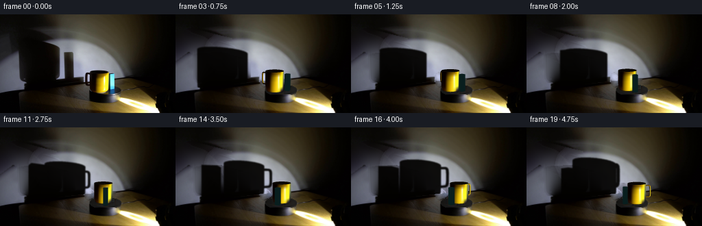
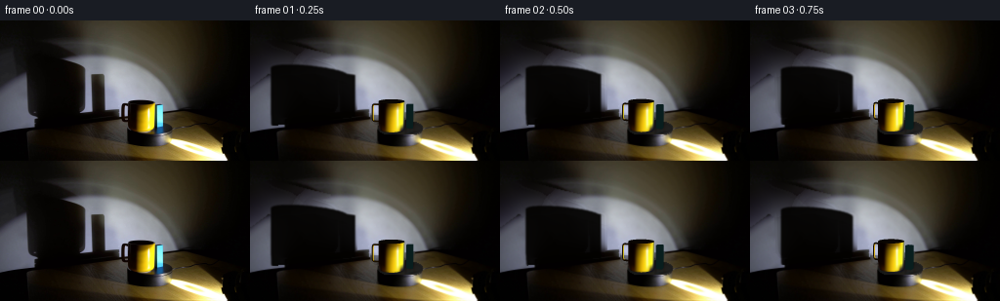
展开代码变化
--- 上一保存版本
+++ 本次保存版本
@@ -0,0 +1,258 @@
+from pathlib import Path
+import numpy as np
+from PIL import Image, ImageDraw, ImageFilter
+from scipy.interpolate import RBFInterpolator
+from scipy.ndimage import gaussian_filter, map_coordinates
+import cv2
+import artifact_io
+
+ROOT=Path(__file__).resolve().parent
+W,H=256,144
+S=3
+CX,CY=153.5,110.0
+source=np.array(Image.open(ROOT/'first_frame.png').convert('RGB'))
+
+def poly_mask(points):
+ im=Image.new('L',(W,H)); ImageDraw.Draw(im).polygon(points,fill=255)
+ return np.asarray(im,dtype=float)/255
+
+# The fixed wall and bench are recovered only under the two moving objects
+# and their original silhouettes. Everything elsewhere is original photography.
+def clean_scene():
+ shadow=poly_mask([(0,26),(11,22),(24,20),(52,28),(81,35),(68,39),(84,45),(88,49),(88,87),(85,93),(79,96),(38,100),(31,98),(27,93),(26,57),(19,52),(0,66)])
+ shadow=np.maximum(shadow,poly_mask([(92,54),(105,54),(108,57),(108,94),(93,96)]))
+ yy,xx=np.mgrid[:H,:W]
+ # Do not replace the fixed turntable's low shadow along the wall/bench join.
+ shadow[(yy>98-.09*(xx-40)) & (xx>32)]=0
+ exclude=cv2.dilate(shadow.astype(np.uint8),np.ones((7,7),np.uint8))>0
+ wall=(yy<110-.106*xx)&(xx<194)&~exclude
+ wall &= ~((xx>122)&(yy>80))
+ good=wall&(xx%3==0)&(yy%3==0)
+ coords=np.column_stack((xx[good],yy[good]))
+ vals=source[good].astype(float)
+ interp=RBFInterpolator(coords, vals, kernel='thin_plate_spline', smoothing=28, neighbors=130)
+ region=cv2.dilate(shadow.astype(np.uint8),np.ones((3,3),np.uint8))>0
+ bg=source.astype(float).copy()
+ bg[region]=np.clip(interp(np.column_stack((xx[region],yy[region]))),0,255)
+ # A gentle amount of the original sensor grain keeps the recovered wall natural.
+ noise=source.astype(float)-gaussian_filter(source.astype(float),(1,1,0))
+ bg[region]+=noise[region]*.26
+ blend=gaussian_filter(region.astype(float),.65)
+ bg=source*(1-blend[:,:,None])+bg*blend[:,:,None]
+ # Empty top of the turntable (same turntable, same stationary base).
+ ellipse=((xx-CX)/23.3)**2+((yy-CY)/8.5)**2
+ top=ellipse<1
+ col=np.zeros((H,W,3),float)
+ v=22+13*(xx-132)/45 + 5*(yy-103)/15
+ col[:]=v[:,:,None]*np.array([1.,.97,.91])
+ grain=source.astype(float)-gaussian_filter(source.astype(float),(1.2,1.2,0))
+ col+=grain*.22
+ # Keep its original front-edge and metallic front skirt intact.
+ top &= yy<117
+ bg[top]=col[top]
+ object_mask=poly_mask([(129,82),(157,80),(160,83),(168,84),(169,114),(155,117),(137,116),(130,111)])
+ object_mask=np.maximum(object_mask,poly_mask([(125,85),(132,84),(135,88),(135,105),(128,107),(124,104),(123,100),(124,88)]))
+ # Smooth continuation for tiny formerly occluded wall/table strips beside the mug.
+ repair=(object_mask>.1)&~top
+ valid=~(object_mask>.1)
+ target=bg.copy()
+ # Use local polynomial interpolation on only the exposed, corresponding surface.
+ for table_region in [False,True]:
+ is_table=yy>=110-.106*xx
+ sel=repair&(is_table==table_region)
+ if not sel.any(): continue
+ okay=valid&(is_table==table_region)&(xx>110)&(xx<185)&(yy>70)&(yy<123)&~top
+ sy,sx=np.where(okay)
+ if len(sx)>20:
+ inter=RBFInterpolator(np.c_[sx[::2],sy[::2]],bg[sy[::2],sx[::2]],kernel='thin_plate_spline',smoothing=15,neighbors=50)
+ target[sel]=np.clip(inter(np.c_[xx[sel],yy[sel]]),0,255)
+ bg[repair]=target[repair]
+ return np.uint8(np.clip(bg,0,255)),shadow
+
+background,oldshadow=clean_scene()
+Image.fromarray(background).save(ROOT/'.tmp/background.png')
+
+# Projection of manually specified geometry. The decreasing height-dependent
+# foreshortening accounts for the camera being almost level with the mug rim.
+def project(v):
+ v=np.asarray(v)
+ x,y,z=v[...,0],v[...,1],v[...,2]
+ return np.stack([CX+x,CY-(.32-.005*z)*y-.85*z],axis=-1)
+
+def rotate(v,a):
+ v=np.asarray(v).copy();x=v[...,0].copy();y=v[...,1].copy()
+ v[...,0]=np.cos(a)*x+np.sin(a)*y
+ v[...,1]=-np.sin(a)*x+np.cos(a)*y
+ return v
+
+# Geometry is built with normals and a material identifier; no rendering engine.
+def meshes(angle):
+ triangles=[]
+ def add(v,n,mat):
+ triangles.append((rotate(np.asarray(v),angle),rotate(np.asarray(n),angle),mat))
+ def quad(v,n,mat):
+ add([v[0],v[1],v[2]],[n[0],n[1],n[2]],mat)
+ add([v[0],v[2],v[3]],[n[0],n[2],n[3]],mat)
+ xc,yc=-8.,-4.
+ r=13.4; hi=32.0
+ N=160
+ for j in range(N):
+ a,b=2*np.pi*j/N,2*np.pi*(j+1)/N
+ ns=[[np.cos(a),np.sin(a),0],[np.cos(b),np.sin(b),0]]
+ for z0,z1 in zip([0,2,8,16,24,30],[2,8,16,24,30,hi]):
+ rr0=r-.65*np.exp(-z0/1.2);rr1=r-.65*np.exp(-z1/1.2)
+ pts=[[xc+rr0*np.cos(a),yc+rr0*np.sin(a),z0], [xc+rr0*np.cos(b),yc+rr0*np.sin(b),z0], [xc+rr1*np.cos(b),yc+rr1*np.sin(b),z1], [xc+rr1*np.cos(a),yc+rr1*np.sin(a),z1]]
+ quad(pts,[ns[0],ns[1],ns[1],ns[0]],'cup')
+ # Thin rounded dark rim, open interior, inner ceramic wall.
+ for r0,r1,z0,z1 in [(13.4,13.25,32,32.3),(13.25,11.9,32.3,32.15),(11.9,11.7,32.15,26)]:
+ pts=[[xc+r0*np.cos(a),yc+r0*np.sin(a),z0],[xc+r0*np.cos(b),yc+r0*np.sin(b),z0],[xc+r1*np.cos(b),yc+r1*np.sin(b),z1],[xc+r1*np.cos(a),yc+r1*np.sin(a),z1]]
+ quad(pts,[[0,0,1]]*4,'rim' if r0>12 else 'inner')
+ add([[xc,yc,25.9],[xc+11.7*np.cos(a),yc+11.7*np.sin(a),26],[xc+11.7*np.cos(b),yc+11.7*np.sin(b),26]],[[0,0,1]]*3,'inside')
+ # Rounded rectangular handle attached at the left, in a vertical radial plane.
+ # Its loop disappears behind the cup and emerges again as the platform turns.
+ path=[]
+ # loop centre at x=-15.95 relative to mug; rounded corners.
+ for center,start in [((-17.2,25.3),0),((-17.2,11.3),90),((-12.9,11.3),180),((-12.9,25.3),270)]:
+ # construct via superellipse instead below
+ pass
+ for t in np.linspace(0,2*np.pi,120,endpoint=False):
+ co,si=np.cos(t),np.sin(t)
+ x=-15.75+3.9*np.sign(co)*abs(co)**.4
+ z=18.0+10.2*np.sign(si)*abs(si)**.4
+ path.append([xc+x,yc,z])
+ path=np.array(path)
+ tubular=[]; norms=[]
+ for k,p in enumerate(path):
+ tangent=path[(k+1)%len(path)]-path[(k-1)%len(path)]
+ tangent/=np.linalg.norm(tangent)
+ n=np.array([-tangent[2],0,tangent[0]])
+ vv=[]; nn=[]
+ for t in np.linspace(0,2*np.pi,10,endpoint=False):
+ normal=n*np.cos(t)+np.array([0,1,0])*np.sin(t)
+ vv.append(p+normal*1.02);nn.append(normal)
+ tubular.append(vv);norms.append(nn)
+ for k in range(len(path)):
+ kn=(k+1)%len(path)
+ for j in range(10):
+ jn=(j+1)%10
+ quad([tubular[k][j],tubular[kn][j],tubular[kn][jn],tubular[k][jn]],[norms[k][j],norms[kn][j],norms[kn][jn],norms[k][jn]],'handle')
+ # Cyan rectangular solid alongside the cup.
+ bx,by=10.,2.0; dx,dy=3.3,3.2; h=27.8
+ v=np.array([[bx-dx,by-dy,0],[bx+dx,by-dy,0],[bx+dx,by+dy,0],[bx-dx,by+dy,0],[bx-dx,by-dy,h],[bx+dx,by-dy,h],[bx+dx,by+dy,h],[bx-dx,by+dy,h]])
+ for inds,n in [([0,1,5,4],[0,-1,0]),([1,2,6,5],[1,0,0]),([2,3,7,6],[0,1,0]),([3,0,4,7],[-1,0,0]),([4,5,6,7],[0,0,1])]:
+ quad(v[inds],[n]*4,'block')
+ return triangles
+
+def vertex_colors(p,n,mat,angle):
+ light=np.array([82.,-40.,5.])-p
+ light/=np.linalg.norm(light,axis=1,keepdims=True)
+ d=np.maximum(np.sum(n*light,axis=1),0)
+ if mat=='cup':
+ center=rotate(np.array([[-8.,-4.,0]]),angle)[0]
+ # Use the observed glaze as the surface texture, with a small light-direction
+ # correction as its centre follows its circular path.
+ delta=np.arctan2(82-center[0],40+center[1])-np.arctan2(90,36)
+ theta=np.arctan2(n[:,0],-n[:,1])-delta*.8
+ nx=np.clip(np.sin(theta),-.96,.96);ny=-np.sqrt(1-nx*nx)
+ z=p[:,2]
+ u=145.5+13.4*nx
+ v=CY-(.32-.005*z)*(-4+13.4*ny)-.85*z
+ v=np.clip(v,87.1,112.1)
+ tex=np.stack([map_coordinates(source[:,:,c].astype(float),[v,u],order=1,mode='nearest') for c in range(3)],axis=1)
+ # Close to the base the ceramic curves into its tiny contact shadow.
+ tex*= (.80+.20*np.clip(z/2,0,1))[:,None]
+ return tex
+ if mat in ('inside','inner','rim'):
+ if mat=='inside':return np.tile([5.,3.,2.],(len(p),1))
+ if mat=='inner':return np.tile([10.,6.,2.],(len(p),1))
+ return np.tile([13.,10.,5.],(len(p),1))+d[:,None]*np.array([31,23,5])
+ if mat=='block':
+ light=np.array([.84,-.55,-.07]);light/=np.linalg.norm(light)
+ d=np.maximum(n@light,0)
+ f=.12+1.54*d
+ color=f[:,None]*np.array([77,251,255])
+ color+= np.maximum(0,d-.8)[:,None]*np.array([150,85,35])
+ return np.clip(color,0,255)
+ if mat=='handle':
+ view=np.array([0,-1,.12]);view/=np.linalg.norm(view)
+ half=light+view;half/=np.linalg.norm(half,axis=1,keepdims=True)
+ spec=np.maximum(np.sum(n*half,axis=1),0)**45
+ col=np.array([13,6,1])+d[:,None]**1.6*np.array([241,190,3])+spec[:,None]*np.array([110,103,67])
+ return np.clip(col,0,255)
+
+# Triangle rasterization with per-pixel depth rather than painter's-order overlap.
+def render_objects(base,tris,angle):
+ out=cv2.resize(base,(W*S,H*S),interpolation=cv2.INTER_CUBIC).astype(float)
+ depth=np.full((H*S,W*S),-1e9)
+ for p,n,mat in tris:
+ pts=project(p)*S
+ lo=np.floor(pts.min(0)).astype(int); hi=np.ceil(pts.max(0)).astype(int)
+ x0=max(lo[0],0);x1=min(hi[0],W*S-1);y0=max(lo[1],0);y1=min(hi[1],H*S-1)
+ if x1<x0 or y1<y0: continue
+ ax,ay=pts[0];bx,by=pts[1];cx,cy=pts[2]
+ denom=(by-cy)*(ax-cx)+(cx-bx)*(ay-cy)
+ if abs(denom)<1e-8: continue
+ ys,xs=np.mgrid[y0:y1+1,x0:x1+1];xs=xs+.5;ys=ys+.5
+ w0=((by-cy)*(xs-cx)+(cx-bx)*(ys-cy))/denom
+ w1=((cy-ay)*(xs-cx)+(ax-cx)*(ys-cy))/denom
+ w2=1-w0-w1
+ inside=(w0>=-1e-6)&(w1>=-1e-6)&(w2>=-1e-6)
+ z=-p[:,1]+.32*p[:,2]
+ dz=w0*z[0]+w1*z[1]+w2*z[2]
+ win=inside&(dz>depth[y0:y1+1,x0:x1+1])
+ if not win.any():continue
+ col=vertex_colors(p,n,mat,angle)
+ colors=w0[:,:,None]*col[0]+w1[:,:,None]*col[1]+w2[:,:,None]*col[2]
+ out[y0:y1+1,x0:x1+1][win]=colors[win]
+ depth[y0:y1+1,x0:x1+1][win]=dz[win]
+ return np.uint8(np.clip(cv2.resize(out,(W,H),interpolation=cv2.INTER_AREA),0,255))
+
+# The point spotlight casts a wall-plane projection of the same rotating geometry.
+def shadow_image(tris):
+ mask=np.zeros((H*S,W*S),np.uint8)
+ lamp=np.array([82.,-40.,5.])
+ for p,n,mat in tris:
+ if mat in ('rim','inner','inside'):continue
+ rays=p-lamp
+ denom=rays[:,1]-.30*rays[:,0]
+ t=(55.+.30*lamp[0]-lamp[1])/denom
+ q=lamp+t[:,None]*rays
+ sx=CX+q[:,0]
+ sy=CY-.32*q[:,1]-.85*q[:,2]
+ poly=np.stack([sx,sy],axis=1)*S
+ if np.isfinite(poly).all() and (t>0).all():
+ cv2.fillConvexPoly(mask,np.round(poly).astype(np.int32),255,lineType=cv2.LINE_AA)
+ shadow=gaussian_filter(mask.astype(float)/255,.70*S)
+ shadow=cv2.resize(shadow,(W,H),interpolation=cv2.INTER_AREA)
+ yy,xx=np.mgrid[:H,:W]
+ wall=yy<110-.106*xx
+ shadow*=wall
+ # Ambient spill leaves the shadow near black rather than a flat binary cutout.
+ result=background.astype(float)*(1-.94*shadow[:,:,None])
+ result+=shadow[:,:,None]*np.array([2.8,1.9,.6])
+ return np.uint8(np.clip(result,0,255))
+
+def frame(angle):
+ tris=meshes(angle)
+ base=shadow_image(tris)
+ # Small stable contact shadows and restrained blue reflection on the platter.
+ y,x=np.mgrid[:H,:W]
+ for centre,radius in [([-8,-4,0],12.8),([10,2,0],4.0)]:
+ c=rotate(np.array([centre]),angle)[0];pc=project(c)
+ footprint=((x-pc[0])/radius)**2+((y-pc[1])/(radius*.29))**2
+ alpha=.4*np.exp(-footprint*2)
+ inside=((x-CX)/23.2)**2+((y-CY)/8.5)**2<1
+ alpha*=inside
+ base=np.uint8(base.astype(float)*(1-alpha[:,:,None]))
+ return render_objects(base,tris,angle)
+
+def main():
+ frames=[source]
+ for i in range(1,20):
+ angle=np.deg2rad(36.0*i/4)
+ f=frame(angle)
+ frames.append(f)
+ if i in [1,5,10,15,19]:Image.fromarray(f).save(ROOT/f'.tmp/candidate_{i:02d}.png')
+ artifact_io.save(np.stack(frames).astype(np.uint8),ROOT)
+
+if __name__=='__main__':main()
候选 02播放与检查图
点击播放 · 原生 RGB 像素
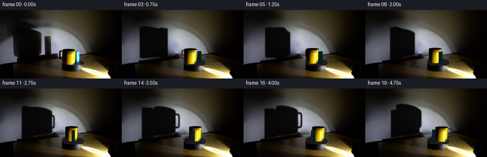
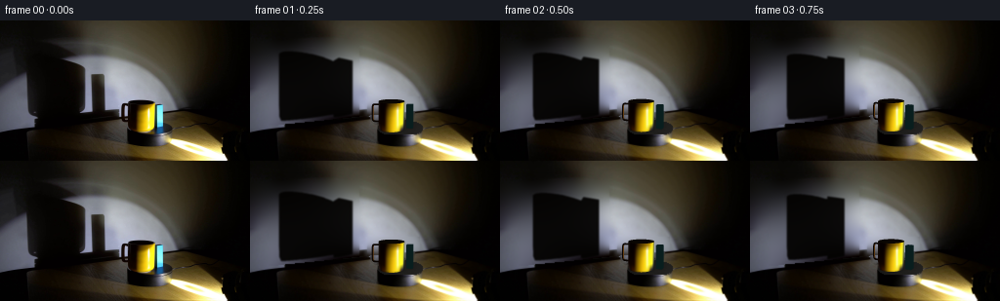
展开代码变化
--- 上一保存版本
+++ 本次保存版本
@@ -19,26 +19,29 @@
# The fixed wall and bench are recovered only under the two moving objects
# and their original silhouettes. Everything elsewhere is original photography.
def clean_scene():
- shadow=poly_mask([(0,26),(11,22),(24,20),(52,28),(81,35),(68,39),(84,45),(88,49),(88,87),(85,93),(79,96),(38,100),(31,98),(27,93),(26,57),(19,52),(0,66)])
- shadow=np.maximum(shadow,poly_mask([(92,54),(105,54),(108,57),(108,94),(93,96)]))
yy,xx=np.mgrid[:H,:W]
- # Do not replace the fixed turntable's low shadow along the wall/bench join.
- shadow[(yy>98-.09*(xx-40)) & (xx>32)]=0
- exclude=cv2.dilate(shadow.astype(np.uint8),np.ones((7,7),np.uint8))>0
- wall=(yy<110-.106*xx)&(xx<194)&~exclude
- wall &= ~((xx>122)&(yy>80))
- good=wall&(xx%3==0)&(yy%3==0)
+ # Sample the exposed wall well outside all source silhouettes. A globally
+ # smooth thin-plate field reconstructs the continuous spotlight illumination.
+ wall=yy<110-.106*xx
+ exclude=((xx>18)&(xx<112)&(yy>19))|((xx<27)&(yy>22)&(yy<69))|((xx>119)&(xx<174)&(yy>77))
+ good=wall&~exclude&(xx<210)&(xx%3==0)&(yy%3==0)
coords=np.column_stack((xx[good],yy[good]))
vals=source[good].astype(float)
- interp=RBFInterpolator(coords, vals, kernel='thin_plate_spline', smoothing=28, neighbors=130)
- region=cv2.dilate(shadow.astype(np.uint8),np.ones((3,3),np.uint8))>0
+ interp=RBFInterpolator(coords,vals,kernel='thin_plate_spline',smoothing=90)
+ recover=wall&exclude
bg=source.astype(float).copy()
- bg[region]=np.clip(interp(np.column_stack((xx[region],yy[region]))),0,255)
- # A gentle amount of the original sensor grain keeps the recovered wall natural.
- noise=source.astype(float)-gaussian_filter(source.astype(float),(1,1,0))
- bg[region]+=noise[region]*.26
- blend=gaussian_filter(region.astype(float),.65)
- bg=source*(1-blend[:,:,None])+bg*blend[:,:,None]
+ bg[recover]=np.clip(interp(np.c_[xx[recover],yy[recover]]),0,255)
+ # Blend well within sampled margins, avoiding any silhouette-shaped seams.
+ broad=cv2.dilate(recover.astype(np.uint8),np.ones((9,9),np.uint8))>0
+ predicted=np.clip(interp(np.c_[xx[broad],yy[broad]]),0,255)
+ field=bg.copy();field[broad]=predicted
+ blend=gaussian_filter(recover.astype(float),2.0)*wall
+ bg=source*(1-blend[:,:,None])+field*blend[:,:,None]
+ bg[recover]=field[recover]
+ # Preserve only the thin shadow of the fixed base near the wall/table join.
+ fixed=(xx>35)&(xx<123)&(yy>106-.10*(xx-35))&wall
+ bg[fixed]=source[fixed]
+ shadow=recover.astype(float)
# Empty top of the turntable (same turntable, same stationary base).
ellipse=((xx-CX)/23.3)**2+((yy-CY)/8.5)**2
top=ellipse<1
@@ -46,7 +49,7 @@
v=22+13*(xx-132)/45 + 5*(yy-103)/15
col[:]=v[:,:,None]*np.array([1.,.97,.91])
grain=source.astype(float)-gaussian_filter(source.astype(float),(1.2,1.2,0))
- col+=grain*.22
+ col+=np.random.default_rng(7).normal(0,.32,(H,W,1))
# Keep its original front-edge and metallic front skirt intact.
top &= yy<117
bg[top]=col[top]
@@ -177,7 +180,7 @@
view=np.array([0,-1,.12]);view/=np.linalg.norm(view)
half=light+view;half/=np.linalg.norm(half,axis=1,keepdims=True)
spec=np.maximum(np.sum(n*half,axis=1),0)**45
- col=np.array([13,6,1])+d[:,None]**1.6*np.array([241,190,3])+spec[:,None]*np.array([110,103,67])
+ col=np.array([8,3,1])+d[:,None]**3.2*np.array([78,43,2])+spec[:,None]*np.array([100,73,34])
return np.clip(col,0,255)
# Triangle rasterization with per-pixel depth rather than painter's-order overlap.
@@ -219,6 +222,12 @@
q=lamp+t[:,None]*rays
sx=CX+q[:,0]
sy=CY-.32*q[:,1]-.85*q[:,2]
+ if mat=='block':
+ sx=100.+(sx-102.)*.90
+ sy=94.+(sy-99.)*1.23
+ else:
+ sx=58.+(sx-58.)*.77
+ sy=94.+(sy-101.)*1.10+.06*(sx-58.)
poly=np.stack([sx,sy],axis=1)*S
if np.isfinite(poly).all() and (t>0).all():
cv2.fillConvexPoly(mask,np.round(poly).astype(np.int32),255,lineType=cv2.LINE_AA)
候选 03播放与检查图
点击播放 · 原生 RGB 像素
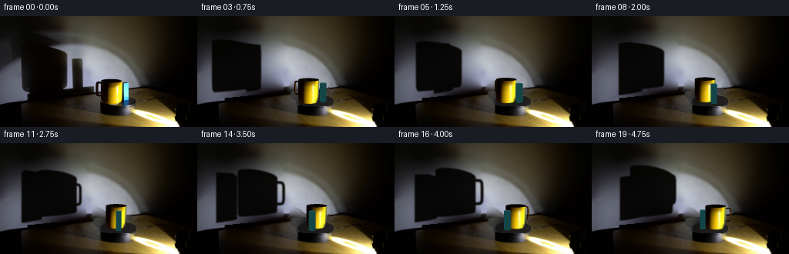
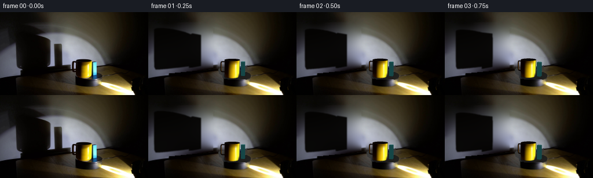
展开代码变化
--- 上一保存版本
+++ 本次保存版本
@@ -56,18 +56,20 @@
object_mask=poly_mask([(129,82),(157,80),(160,83),(168,84),(169,114),(155,117),(137,116),(130,111)])
object_mask=np.maximum(object_mask,poly_mask([(125,85),(132,84),(135,88),(135,105),(128,107),(124,104),(123,100),(124,88)]))
# Smooth continuation for tiny formerly occluded wall/table strips beside the mug.
- repair=(object_mask>.1)&~top
- valid=~(object_mask>.1)
+ repair=(cv2.dilate((object_mask>.1).astype(np.uint8),np.ones((5,5),np.uint8))>0)&~top
+ repair &= yy<116
+ valid=~(cv2.dilate((object_mask>.1).astype(np.uint8),np.ones((11,11),np.uint8))>0)
target=bg.copy()
# Use local polynomial interpolation on only the exposed, corresponding surface.
for table_region in [False,True]:
is_table=yy>=110-.106*xx
sel=repair&(is_table==table_region)
if not sel.any(): continue
- okay=valid&(is_table==table_region)&(xx>110)&(xx<185)&(yy>70)&(yy<123)&~top
+ okay=valid&(is_table==table_region)&(xx>109)&(xx<187)&(yy>67)&(yy<129)&~top
+ if table_region:okay &= (xx>133)|(yy>113)
sy,sx=np.where(okay)
if len(sx)>20:
- inter=RBFInterpolator(np.c_[sx[::2],sy[::2]],bg[sy[::2],sx[::2]],kernel='thin_plate_spline',smoothing=15,neighbors=50)
+ inter=RBFInterpolator(np.c_[sx[::2],sy[::2]],bg[sy[::2],sx[::2]],kernel='thin_plate_spline',smoothing=50,neighbors=110)
target[sel]=np.clip(inter(np.c_[xx[sel],yy[sel]]),0,255)
bg[repair]=target[repair]
return np.uint8(np.clip(bg,0,255)),shadow
@@ -160,7 +162,7 @@
z=p[:,2]
u=145.5+13.4*nx
v=CY-(.32-.005*z)*(-4+13.4*ny)-.85*z
- v=np.clip(v,87.1,112.1)
+ v=np.clip(v,87.1,111.0)
tex=np.stack([map_coordinates(source[:,:,c].astype(float),[v,u],order=1,mode='nearest') for c in range(3)],axis=1)
# Close to the base the ceramic curves into its tiny contact shadow.
tex*= (.80+.20*np.clip(z/2,0,1))[:,None]
@@ -170,9 +172,9 @@
if mat=='inner':return np.tile([10.,6.,2.],(len(p),1))
return np.tile([13.,10.,5.],(len(p),1))+d[:,None]*np.array([31,23,5])
if mat=='block':
- light=np.array([.84,-.55,-.07]);light/=np.linalg.norm(light)
+ light=np.array([.84,-.55,.08]);light/=np.linalg.norm(light)
d=np.maximum(n@light,0)
- f=.12+1.54*d
+ f=.28+1.24*d
color=f[:,None]*np.array([77,251,255])
color+= np.maximum(0,d-.8)[:,None]*np.array([150,85,35])
return np.clip(color,0,255)
@@ -218,16 +220,16 @@
if mat in ('rim','inner','inside'):continue
rays=p-lamp
denom=rays[:,1]-.30*rays[:,0]
- t=(55.+.30*lamp[0]-lamp[1])/denom
+ t=(70.+.30*lamp[0]-lamp[1])/denom
q=lamp+t[:,None]*rays
sx=CX+q[:,0]
sy=CY-.32*q[:,1]-.85*q[:,2]
if mat=='block':
- sx=100.+(sx-102.)*.90
- sy=94.+(sy-99.)*1.23
+ sx=100.+(sx-102.)*.85
+ sy=94.+(sy-99.)*1.07
else:
- sx=58.+(sx-58.)*.77
- sy=94.+(sy-101.)*1.10+.06*(sx-58.)
+ sx=59.+(sx-58.)*.77
+ sy=94.+(sy-101.)*.99+.06*(sx-58.)
poly=np.stack([sx,sy],axis=1)*S
if np.isfinite(poly).all() and (t>0).all():
cv2.fillConvexPoly(mask,np.round(poly).astype(np.int32),255,lineType=cv2.LINE_AA)
候选 04播放与检查图
点击播放 · 原生 RGB 像素
展开代码变化
--- 上一保存版本
+++ 本次保存版本
@@ -58,20 +58,18 @@
# Smooth continuation for tiny formerly occluded wall/table strips beside the mug.
repair=(cv2.dilate((object_mask>.1).astype(np.uint8),np.ones((5,5),np.uint8))>0)&~top
repair &= yy<116
- valid=~(cv2.dilate((object_mask>.1).astype(np.uint8),np.ones((11,11),np.uint8))>0)
- target=bg.copy()
- # Use local polynomial interpolation on only the exposed, corresponding surface.
- for table_region in [False,True]:
- is_table=yy>=110-.106*xx
- sel=repair&(is_table==table_region)
- if not sel.any(): continue
- okay=valid&(is_table==table_region)&(xx>109)&(xx<187)&(yy>67)&(yy<129)&~top
- if table_region:okay &= (xx>133)|(yy>113)
- sy,sx=np.where(okay)
- if len(sx)>20:
- inter=RBFInterpolator(np.c_[sx[::2],sy[::2]],bg[sy[::2],sx[::2]],kernel='thin_plate_spline',smoothing=50,neighbors=110)
- target[sel]=np.clip(inter(np.c_[xx[sel],yy[sel]]),0,255)
- bg[repair]=target[repair]
+ # The wall has already been recovered. Only the small strip of tabletop
+ # between the turntable and the wall needs a separate wood-colour fill.
+ repair &= yy>=110-.106*xx
+ distance=yy-(110-.106*xx)
+ t=np.clip((xx-114)/69,0,1)
+ left_y=np.clip(distance+110-.106*114,99,143)
+ right_y=np.clip(distance+110-.106*183,92,143)
+ for c in range(3):
+ lv=map_coordinates(source[:,:,c].astype(float),[left_y,np.full((H,W),114.)],order=1)
+ rv=map_coordinates(source[:,:,c].astype(float),[right_y,np.full((H,W),183.)],order=1)
+ wood=(1-t)*lv+t*rv
+ bg[:,:,c][repair]=wood[repair]
return np.uint8(np.clip(bg,0,255)),shadow
background,oldshadow=clean_scene()
候选 05播放与检查图

候选 06播放与检查图
点击播放 · 原生 RGB 像素
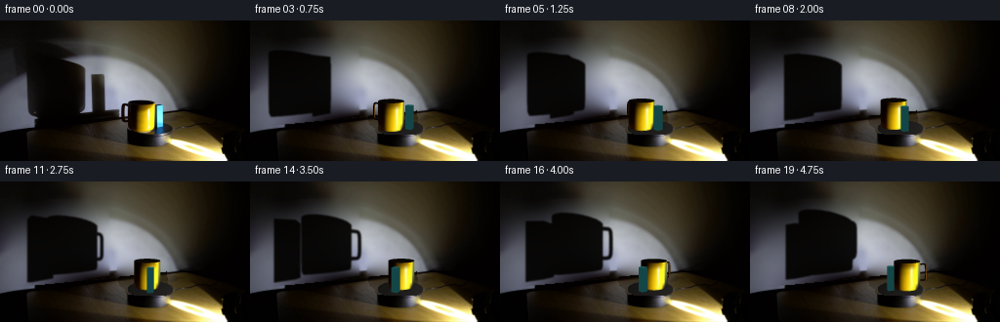
展开代码变化
--- 上一保存版本
+++ 本次保存版本
@@ -51,7 +51,7 @@
grain=source.astype(float)-gaussian_filter(source.astype(float),(1.2,1.2,0))
col+=np.random.default_rng(7).normal(0,.32,(H,W,1))
# Keep its original front-edge and metallic front skirt intact.
- top &= yy<117
+ top &= yy<118
bg[top]=col[top]
object_mask=poly_mask([(129,82),(157,80),(160,83),(168,84),(169,114),(155,117),(137,116),(130,111)])
object_mask=np.maximum(object_mask,poly_mask([(125,85),(132,84),(135,88),(135,105),(128,107),(124,104),(123,100),(124,88)]))
@@ -164,6 +164,8 @@
tex=np.stack([map_coordinates(source[:,:,c].astype(float),[v,u],order=1,mode='nearest') for c in range(3)],axis=1)
# Close to the base the ceramic curves into its tiny contact shadow.
tex*= (.80+.20*np.clip(z/2,0,1))[:,None]
+ highlight=np.exp(-((nx-.56)/.09)**2)*np.exp(-((z-17.)/11.)**4)
+ tex=tex*(1-.78*highlight[:,None]) + np.array([255,254,166])*.78*highlight[:,None]
return tex
if mat in ('inside','inner','rim'):
if mat=='inside':return np.tile([5.,3.,2.],(len(p),1))
@@ -223,11 +225,11 @@
sx=CX+q[:,0]
sy=CY-.32*q[:,1]-.85*q[:,2]
if mat=='block':
- sx=100.+(sx-102.)*.85
- sy=94.+(sy-99.)*1.07
+ sx=107.+(sx-102.)*.4675
+ sy=94.+(sy-99.)*.76
else:
- sx=59.+(sx-58.)*.77
- sy=94.+(sy-101.)*.99+.06*(sx-58.)
+ sx=72.+(sx-58.)*.66
+ sy=94.+(sy-101.)*.99+.22*(sx-72.)
poly=np.stack([sx,sy],axis=1)*S
if np.isfinite(poly).all() and (t>0).all():
cv2.fillConvexPoly(mask,np.round(poly).astype(np.int32),255,lineType=cv2.LINE_AA)
候选 07播放与检查图
可观测工具轨迹
实际执行的命令与返回图片。
命令 1exit 0
/bin/bash -lc 'ls -la && cat prompt.txt && cat GENERATION_RULES.md'
命令 2exit 0
/bin/bash -lc "cat artifact_io.py && python - <<'PY'
from PIL import Image
im=Image.open('first_frame.png');im.resize((1024,576)).save('.tmp/zoom.png')
PY"命令 3exit 0
/bin/bash -lc "python - <<'PY'
import importlib.util
for n in ['numpy','scipy','cv2','PIL']:print(n,bool(importlib.util.find_spec(n)))
from PIL import Image
im=Image.open('first_frame.png'); print(im.size)
PY"命令 4exit 0
/bin/bash -lc "python - <<'PY'
from PIL import Image,ImageDraw
im=Image.open('first_frame.png').resize((1024,576));d=ImageDraw.Draw(im)
for x in range(0,256,10):d.line((4*x,0,4*x,576),fill=(150,80,80),width=1);d.text((4*x,0),str(x),fill='white')
for y in range(0,144,10):d.line((0,4*y,1024,4*y),fill=(150,80,80),width=1);d.text((0,4*y),str(y),fill='white')
im.save('.tmp/grid.png')
PY"命令 5exit 0
/bin/bash -lc "python - <<'PY'
from PIL import Image
import numpy as np
a=np.array(Image.open('first_frame.png'))
for y in [10,20,30,40,50,60,70,80,90,100,110]:
print(y, [(x, a[y,x].tolist()) for x in [0,10,20,40,60,80,100,120,140,160,180,200]])
PY"命令 6exit 0
/bin/bash -lc "cat > generate.py <<'PY'
from pathlib import Path
import numpy as np
from PIL import Image, ImageDraw, ImageFilter
from scipy.interpolate import RBFInterpolator
from scipy.ndimage import gaussian_filter, map_coordinates
import cv2
import artifact_io
ROOT=Path(__file__).resolve().parent
W,H=256,144
S=3
CX,CY=153.5,110.0
source=np.array(Image.open(ROOT/'first_frame.png').convert('RGB'))
def poly_mask(points):
im=Image.new('L',(W,H)); ImageDraw.Draw(im).polygon(points,fill=255)
return np.asarray(im,dtype=float)/255
# The fixed wall and bench are recovered only under the two moving objects
# and their original silhouettes. Everything elsewhere is original photography.
def clean_scene():
shadow=poly_mask([(0,26),(11,22),(24,20),(52,28),(81,35),(68,39),(84,45),(88,49),(88,87),(85,93),(79,96),(38,100),(31,98),(27,93),(26,57),(19,52),(0,66)])
shadow=np.maximum(shadow,poly_mask([(92,54),(105,54),(108,57),(108,94),(93,96)]))
yy,xx=np.mgrid[:H,:W]
# Do not replace the fixed turntable's low shadow along the wall/bench join.
shadow[(yy>98-.09*(xx-40)) & (xx>32)]=0
exclude=cv2.dilate(shadow.astype(np.uint8),np.ones((7,7),np.uint8))>0
wall=(yy<110-.106*xx)&(xx<194)&~exclude
wall &= ~((xx>122)&(yy>80))
good=wall&(xx%3==0)&(yy%3==0)
coords=np.column_stack((xx[good],yy[good]))
vals=source[good].astype(float)
interp=RBFInterpolator(coords, vals, kernel='thin_plate_spline', smoothing=28, neighbors=130)
region=cv2.dilate(shadow.astype(np.uint8),np.ones((3,3),np.uint8))>0
bg=source.astype(float).copy()
bg[region]=np.clip(interp(np.column_stack((xx[region],yy[region]))),0,255)
# A gentle amount of the original sensor grain keeps the recovered wall natural.
noise=source.astype(float)-gaussian_filter(source.astype(float),(1,1,0))
bg[region]+=noise[region]*.26
blend=gaussian_filter(region.astype(float),.65)
bg=source*(1-blend[:,:,None])+bg*blend[:,:,None]
# Empty top of the turntable (same turntable, same stationary base).
ellipse=((xx-CX)/23.3)**2+((yy-CY)/8.5)**2
top=ellipse<1
col=np.zeros((H,W,3),float)
v=22+13*(xx-132)/45 + 5*(yy-103)/15
col[:]=v[:,:,None]*np.array([1.,.97,.91])
grain=source.astype(float)-gaussian_filter(source.astype(float),(1.2,1.2,0))
col+=grain*.22
# Keep its original front-edge and metallic front skirt intact.
top &= yy<117
bg[top]=col[top]
object_mask=poly_mask([(129,82),(157,80),(160,83),(168,84),(169,114),(155,117),(137,116),(130,111)])
object_mask=np.maximum(object_mask,poly_mask([(125,85),(132,84),(135,88),(135,105),(128,107),(124,104),(123,100),(124,88)]))
# Smooth continuation for tiny formerly occluded wall/table strips beside the mug.
repair=(object_mask>.1)&~top
valid=~(object_mask>.1)
target=bg.copy()
# Use local polynomial interpolation on only the exposed, corresponding surface.
for table_region in [False,True]:
is_table=yy>=110-.106*xx
sel=repair&(is_table==table_region)
if not sel.any(): continue
okay=valid&(is_table==table_region)&(xx>110)&(xx<185)&(yy>70)&(yy<123)&~top
sy,sx=np.where(okay)
if len(sx)>20:
inter=RBFInterpolator(np.c_[sx[::2],sy[::2]],bg[sy[::2],sx[::2]],kernel='thin_plate_spline',smoothing=15,neighbors=50)
target[sel]=np.clip(inter(np.c_[xx[sel],yy[sel]]),0,255)
bg[repair]=target[repair]
return np.uint8(np.clip(bg,0,255)),shadow
background,oldshadow=clean_scene()
Image.fromarray(background).save(ROOT/'.tmp/background.png')
# Projection of manually specified geometry. The decreasing height-dependent
# foreshortening accounts for the camera being almost level with the mug rim.
def project(v):
v=np.asarray(v)
x,y,z=v[...,0],v[...,1],v[...,2]
return np.stack([CX+x,CY-(.32-.005*z)*y-.85*z],axis=-1)
def rotate(v,a):
v=np.asarray(v).copy();x=v[...,0].copy();y=v[...,1].copy()
v[...,0]=np.cos(a)*x+np.sin(a)*y
v[...,1]=-np.sin(a)*x+np.cos(a)*y
return v
# Geometry is built with normals and a material identifier; no rendering engine.
def meshes(angle):
triangles=[]
def add(v,n,mat):
triangles.append((rotate(np.asarray(v),angle),rotate(np.asarray(n),angle),mat))
def quad(v,n,mat):
add([v[0],v[1],v[2]],[n[0],n[1],n[2]],mat)
add([v[0],v[2],v[3]],[n[0],n[2],n[3]],mat)
xc,yc=-8.,-4.
r=13.4; hi=32.0
N=160
for j in range(N):
a,b=2*np.pi*j/N,2*np.pi*(j+1)/N
ns=[[np.cos(a),np.sin(a),0],[np.cos(b),np.sin(b),0]]
for z0,z1 in zip([0,2,8,16,24,30],[2,8,16,24,30,hi]):
rr0=r-.65*np.exp(-z0/1.2);rr1=r-.65*np.exp(-z1/1.2)
pts=[[xc+rr0*np.cos(a),yc+rr0*np.sin(a),z0], [xc+rr0*np.cos(b),yc+rr0*np.sin(b),z0], [xc+rr1*np.cos(b),yc+rr1*np.sin(b),z1], [xc+rr1*np.cos(a),yc+rr1*np.sin(a),z1]]
quad(pts,[ns[0],ns[1],ns[1],ns[0]],'cup')
# Thin rounded dark rim, open interior, inner ceramic wall.
for r0,r1,z0,z1 in [(13.4,13.25,32,32.3),(13.25,11.9,32.3,32.15),(11.9,11.7,32.15,26)]:
pts=[[xc+r0*np.cos(a),yc+r0*np.sin(a),z0],[xc+r0*np.cos(b),yc+r0*np.sin(b),z0],[xc+r1*np.cos(b),yc+r1*np.sin(b),z1],[xc+r1*np.cos(a),yc+r1*np.sin(a),z1]]
quad(pts,[[0,0,1]]*4,'rim' if r0>12 else 'inner')
add([[xc,yc,25.9],[xc+11.7*np.cos(a),yc+11.7*np.sin(a),26],[xc+11.7*np.cos(b),yc+11.7*np.sin(b),26]],[[0,0,1]]*3,'inside')
# Rounded rectangular handle attached at the left, in a vertical radial plane.
# Its loop disappears behind the cup and emerges again as the platform turns.
path=[]
# loop centre at x=-15.95 relative to mug; rounded corners.
for center,start in [((-17.2,25.3),0),((-17.2,11.3),90),((-12.9,11.3),180),((-12.9,25.3),270)]:
# construct via superellipse instead below
pass
for t in np.linspace(0,2*np.pi,120,endpoint=False):
co,si=np.cos(t),np.sin(t)
x=-15.75+3.9*np.sign(co)*abs(co)**.4
z=18.0+10.2*np.sign(si)*abs(si)**.4
path.append([xc+x,yc,z])
path=np.array(path)
tubular=[]; norms=[]
for k,p in enumerate(path):
tangent=path[(k+1)%len(path)]-path[(k-1)%len(path)]
tangent/=np.linalg.norm(tangent)
n=np.array([-tangent[2],0,tangent[0]])
vv=[]; nn=[]
for t in np.linspace(0,2*np.pi,10,endpoint=False):
normal=n*np.cos(t)+np.array([0,1,0])*np.sin(t)
vv.append(p+normal*1.02);nn.append(normal)
tubular.append(vv);norms.append(nn)
for k in range(len(path)):
kn=(k+1)%len(path)
for j in range(10):
jn=(j+1)%10
quad([tubular[k][j],tubular[kn][j],tubular[kn][jn],tubular[k][jn]],[norms[k][j],norms[kn][j],norms[kn][jn],norms[k][jn]],'handle')
# Cyan rectangular solid alongside the cup.
bx,by=10.,2.0; dx,dy=3.3,3.2; h=27.8
v=np.array([[bx-dx,by-dy,0],[bx+dx,by-dy,0],[bx+dx,by+dy,0],[bx-dx,by+dy,0],[bx-dx,by-dy,h],[bx+dx,by-dy,h],[bx+dx,by+dy,h],[bx-dx,by+dy,h]])
for inds,n in [([0,1,5,4],[0,-1,0]),([1,2,6,5],[1,0,0]),([2,3,7,6],[0,1,0]),([3,0,4,7],[-1,0,0]),([4,5,6,7],[0,0,1])]:
quad(v[inds],[n]*4,'block')
return triangles
def vertex_colors(p,n,mat,angle):
light=np.array([82.,-40.,5.])-p
light/=np.linalg.norm(light,axis=1,keepdims=True)
d=np.maximum(np.sum(n*light,axis=1),0)
if mat=='cup':
center=rotate(np.array([[-8.,-4.,0]]),angle)[0]
# Use the observed glaze as the surface texture, with a small light-direction
# correction as its centre follows its circular path.
delta=np.arctan2(82-center[0],40+center[1])-np.arctan2(90,36)
theta=np.arctan2(n[:,0],-n[:,1])-delta*.8
nx=np.clip(np.sin(theta),-.96,.96);ny=-np.sqrt(1-nx*nx)
z=p[:,2]
u=145.5+13.4*nx
v=CY-(.32-.005*z)*(-4+13.4*ny)-.85*z
v=np.clip(v,87.1,112.1)
tex=np.stack([map_coordinates(source[:,:,c].astype(float),[v,u],order=1,mode='nearest') for c in range(3)],axis=1)
# Close to the base the ceramic curves into its tiny contact shadow.
tex*= (.80+.20*np.clip(z/2,0,1))[:,None]
return tex
if mat in ('inside','inner','rim'):
if mat=='inside':return np.tile([5.,3.,2.],(len(p),1))
if mat=='inner':return np.tile([10.,6.,2.],(len(p),1))
return np.tile([13.,10.,5.],(len(p),1))+d[:,None]*np.array([31,23,5])
if mat=='block':
light=np.array([.84,-.55,-.07]);light/=np.linalg.norm(light)
d=np.maximum(n@light,0)
f=.12+1.54*d
color=f[:,None]*np.array([77,251,255])
color+= np.maximum(0,d-.8)[:,None]*np.array([150,85,35])
return np.clip(color,0,255)
if mat=='handle':
view=np.array([0,-1,.12]);view/=np.linalg.norm(view)
half=light+view;half/=np.linalg.norm(half,axis=1,keepdims=True)
spec=np.maximum(np.sum(n*half,axis=1),0)**45
col=np.array([13,6,1])+d[:,None]**1.6*np.array([241,190,3])+spec[:,None]*np.array([110,103,67])
return np.clip(col,0,255)
# Triangle rasterization with per-pixel depth rather than painter's-order overlap.
def render_objects(base,tris,angle):
out=cv2.resize(base,(W*S,H*S),interpolation=cv2.INTER_CUBIC).astype(float)
depth=np.full((H*S,W*S),-1e9)
for p,n,mat in tris:
pts=project(p)*S
lo=np.floor(pts.min(0)).astype(int); hi=np.ceil(pts.max(0)).astype(int)
x0=max(lo[0],0);x1=min(hi[0],W*S-1);y0=max(lo[1],0);y1=min(hi[1],H*S-1)
if x1<x0 or y1<y0: continue
ax,ay=pts[0];bx,by=pts[1];cx,cy=pts[2]
denom=(by-cy)*(ax-cx)+(cx-bx)*(ay-cy)
if abs(denom)<1e-8: continue
ys,xs=np.mgrid[y0:y1+1,x0:x1+1];xs=xs+.5;ys=ys+.5
w0=((by-cy)*(xs-cx)+(cx-bx)*(ys-cy))/denom
w1=((cy-ay)*(xs-cx)+(ax-cx)*(ys-cy))/denom
w2=1-w0-w1
inside=(w0>=-1e-6)&(w1>=-1e-6)&(w2>=-1e-6)
z=-p[:,1]+.32*p[:,2]
dz=w0*z[0]+w1*z[1]+w2*z[2]
win=inside&(dz>depth[y0:y1+1,x0:x1+1])
if not win.any():continue
col=vertex_colors(p,n,mat,angle)
colors=w0[:,:,None]*col[0]+w1[:,:,None]*col[1]+w2[:,:,None]*col[2]
out[y0:y1+1,x0:x1+1][win]=colors[win]
depth[y0:y1+1,x0:x1+1][win]=dz[win]
return np.uint8(np.clip(cv2.resize(out,(W,H),interpolation=cv2.INTER_AREA),0,255))
# The point spotlight casts a wall-plane projection of the same rotating geometry.
def shadow_image(tris):
mask=np.zeros((H*S,W*S),np.uint8)
lamp=np.array([82.,-40.,5.])
for p,n,mat in tris:
if mat in ('rim','inner','inside'):continue
rays=p-lamp
denom=rays[:,1]-.30*rays[:,0]
t=(55.+.30*lamp[0]-lamp[1])/denom
q=lamp+t[:,None]*rays
sx=CX+q[:,0]
sy=CY-.32*q[:,1]-.85*q[:,2]
poly=np.stack([sx,sy],axis=1)*S
if np.isfinite(poly).all() and (t>0).all():
cv2.fillConvexPoly(mask,np.round(poly).astype(np.int32),255,lineType=cv2.LINE_AA)
shadow=gaussian_filter(mask.astype(float)/255,.70*S)
shadow=cv2.resize(shadow,(W,H),interpolation=cv2.INTER_AREA)
yy,xx=np.mgrid[:H,:W]
wall=yy<110-.106*xx
shadow*=wall
# Ambient spill leaves the shadow near black rather than a flat binary cutout.
result=background.astype(float)*(1-.94*shadow[:,:,None])
result+=shadow[:,:,None]*np.array([2.8,1.9,.6])
return np.uint8(np.clip(result,0,255))
def frame(angle):
tris=meshes(angle)
base=shadow_image(tris)
# Small stable contact shadows and restrained blue reflection on the platter.
y,x=np.mgrid[:H,:W]
for centre,radius in [([-8,-4,0],12.8),([10,2,0],4.0)]:
c=rotate(np.array([centre]),angle)[0];pc=project(c)
footprint=((x-pc[0])/radius)**2+((y-pc[1])/(radius*.29))**2
alpha=.4*np.exp(-footprint*2)
inside=((x-CX)/23.2)**2+((y-CY)/8.5)**2<1
alpha*=inside
base=np.uint8(base.astype(float)*(1-alpha[:,:,None]))
return render_objects(base,tris,angle)
def main():
frames=[source]
for i in range(1,20):
angle=np.deg2rad(36.0*i/4)
f=frame(angle)
frames.append(f)
if i in [1,5,10,15,19]:Image.fromarray(f).save(ROOT/f'.tmp/candidate_{i:02d}.png')
artifact_io.save(np.stack(frames).astype(np.uint8),ROOT)
if __name__=='__main__':main()
PY
OPENBLAS_NUM_THREADS=1 python generate.py"命令 7exit 0
/bin/bash -lc "python - <<'PY'
from PIL import Image
Image.open('.tmp/background.png').resize((1024,576)).save('.tmp/background_zoom.png')
PY"命令 8exit 0
/bin/bash -lc "OPENBLAS_NUM_THREADS=1 python - <<'PY'
import generate
from PIL import Image
Image.fromarray(generate.frame(0)).resize((1024,576)).save('.tmp/test0.png')
PY"命令 9exit 0
/bin/bash -lc "python - <<'PY'
p='generate.py'
s=open(p).read();start=s.index(' shadow=poly_mask');end=s.index(' # Empty top of the turntable',start)
s=s[:start]+''' yy,xx=np.mgrid[:H,:W]
# Sample the exposed wall well outside all source silhouettes. A globally
# smooth thin-plate field reconstructs the continuous spotlight illumination.
wall=yy<110-.106*xx
exclude=((xx>18)&(xx<112)&(yy>19))|((xx<27)&(yy>22)&(yy<69))|((xx>119)&(xx<174)&(yy>77))
good=wall&~exclude&(xx<210)&(xx%3==0)&(yy%3==0)
coords=np.column_stack((xx[good],yy[good]))
vals=source[good].astype(float)
interp=RBFInterpolator(coords,vals,kernel='thin_plate_spline',smoothing=90)
recover=wall&exclude
bg=source.astype(float).copy()
bg[recover]=np.clip(interp(np.c_[xx[recover],yy[recover]]),0,255)
# Blend well within sampled margins, avoiding any silhouette-shaped seams.
broad=cv2.dilate(recover.astype(np.uint8),np.ones((9,9),np.uint8))>0
predicted=np.clip(interp(np.c_[xx[broad],yy[broad]]),0,255)
field=bg.copy();field[broad]=predicted
blend=gaussian_filter(recover.astype(float),2.0)*wall
bg=source*(1-blend[:,:,None])+field*blend[:,:,None]
bg[recover]=field[recover]
# Preserve only the thin shadow of the fixed base near the wall/table join.
fixed=(xx>35)&(xx<123)&(yy>106-.10*(xx-35))&wall
bg[fixed]=source[fixed]
shadow=recover.astype(float)
''' +s[end:]
s=s.replace('col+=grain*.22','col+=np.random.default_rng(7).normal(0,.32,(H,W,1))')
s=s.replace(\"if mat=='handle':\", \"if mat=='handle':\")
s=s.replace(\"col=np.array([13,6,1])+d[:,None]**1.6*np.array([241,190,3])+spec[:,None]*np.array([110,103,67])\", \"col=np.array([8,3,1])+d[:,None]**3.2*np.array([78,43,2])+spec[:,None]*np.array([100,73,34])\")
# Compute the source-projection coordinates by material and calibrate the static wall.
s=s.replace(\"sx=CX+q[:,0]\\n sy=CY-.32*q[:,1]-.85*q[:,2]\", \"sx=CX+q[:,0]\\n sy=CY-.32*q[:,1]-.85*q[:,2]\\n if mat=='block':\\n sx=100.+(sx-102.)*.90\\n sy=94.+(sy-99.)*1.23\\n else:\\n sx=58.+(sx-58.)*.77\\n sy=94.+(sy-101.)*1.10+.06*(sx-58.)\")
open(p,'w').write(s)
PY
OPENBLAS_NUM_THREADS=1 python generate.py"命令 10exit 0
/bin/bash -lc "python - <<'PY'
from PIL import Image
Image.open('.tmp/background.png').resize((1024,576)).save('.tmp/background_zoom.png')
PY"命令 11exit 0
/bin/bash -lc "OPENBLAS_NUM_THREADS=1 python - <<'PY'
import generate
from PIL import Image
Image.fromarray(generate.frame(0)).resize((1024,576)).save('.tmp/test0.png')
Image.open('.tmp/candidate_15.png').resize((1024,576)).save('.tmp/test15.png')
PY"命令 12exit 0
/bin/bash -lc "python - <<'PY' p='generate.py';s=open(p).read() s=s.replace(\"repair=(object_mask>.1)&~top\", \"repair=(cv2.dilate((object_mask>.1).astype(np.uint8),np.ones((5,5),np.uint8))>0)&~top\\n repair &= yy<116\") s=s.replace(\"valid=~(object_mask>.1)\", \"valid=~(cv2.dilate((object_mask>.1).astype(np.uint8),np.ones((11,11),np.uint8))>0)\") s=s.replace(\"okay=valid&(is_table==table_region)&(xx>110)&(xx<185)&(yy>70)&(yy<123)&~top\", \"okay=valid&(is_table==table_region)&(xx>109)&(xx<187)&(yy>67)&(yy<129)&~top\\n if table_region:okay &= (xx>133)|(yy>113)\") s=s.replace(\"smoothing=15,neighbors=50\", \"smoothing=50,neighbors=110\") s=s.replace(\"t=(55.+.30*lamp[0]-lamp[1])/denom\", \"t=(70.+.30*lamp[0]-lamp[1])/denom\") # Remove source triangle-edge artefacts by texture antialiasing / face visibility. s=s.replace(\"theta=np.arctan2(n[:,0],-n[:,1])-delta*.8\", \"theta=np.arctan2(n[:,0],-n[:,1])-delta*.8\") s=s.replace(\"z=p[:,2]\\n u=\", \"z=p[:,2]\\n u=\") s=s.replace(\"v=np.clip(v,87.1,112.1)\", \"v=np.clip(v,87.1,111.0)\") # Uniform cyan coating with ordinary illumination, not an unnaturally emissive blue. s=s.replace(\"light=np.array([.84,-.55,-.07])\", \"light=np.array([.84,-.55,.08])\") s=s.replace(\"f=.12+1.54*d\", \"f=.28+1.24*d\") s=s.replace(\"sx=100.+(sx-102.)*.90\", \"sx=100.+(sx-102.)*.85\") s=s.replace(\"sy=94.+(sy-99.)*1.23\", \"sy=94.+(sy-99.)*1.07\") s=s.replace(\"sx=58.+(sx-58.)*.77\", \"sx=59.+(sx-58.)*.77\") s=s.replace(\"sy=94.+(sy-101.)*1.10+.06*(sx-58.)\", \"sy=94.+(sy-101.)*.99+.06*(sx-58.)\") open(p,'w').write(s) PY OPENBLAS_NUM_THREADS=1 python generate.py"
命令 13exit 0
/bin/bash -lc "python - <<'PY'
from PIL import Image
Image.open('.tmp/background.png').resize((1024,576)).save('.tmp/background_zoom.png')
PY"命令 14exit 0
/bin/bash -lc "python - <<'PY'
p='generate.py';s=open(p).read();start=s.index(' repair=(cv2.dilate');end=s.index(' return np.uint8',start)
s=s[:start]+''' repair=(cv2.dilate((object_mask>.1).astype(np.uint8),np.ones((5,5),np.uint8))>0)&~top
repair &= yy<116
# The wall has already been recovered. Only the small strip of tabletop
# between the turntable and the wall needs a separate wood-colour fill.
repair &= yy>=110-.106*xx
distance=yy-(110-.106*xx)
t=np.clip((xx-114)/69,0,1)
left_y=np.clip(distance+110-.106*114,99,143)
right_y=np.clip(distance+110-.106*183,92,143)
for c in range(3):
lv=map_coordinates(source[:,:,c].astype(float),[left_y,np.full((H,W),114.)],order=1)
rv=map_coordinates(source[:,:,c].astype(float),[right_y,np.full((H,W),183.)],order=1)
wood=(1-t)*lv+t*rv
bg[:,:,c][repair]=wood[repair]
''' +s[end:]
open(p,'w').write(s)
PY
OPENBLAS_NUM_THREADS=1 python generate.py"命令 15exit 0
/bin/bash -lc "OPENBLAS_NUM_THREADS=1 python - <<'PY'
import generate
from PIL import Image
Image.fromarray(generate.frame(0)).resize((1024,576)).save('.tmp/test0.png')
PY"命令 16exit 0
/bin/bash -lc "python - <<'PY' p='generate.py';s=open(p).read() s=s.replace(\"sx=100.+(sx-102.)*.85\", \"sx=107.+(sx-102.)*.4675\") s=s.replace(\"sy=94.+(sy-99.)*1.07\", \"sy=94.+(sy-99.)*.76\") s=s.replace(\"sx=59.+(sx-58.)*.77\", \"sx=72.+(sx-58.)*.66\") s=s.replace(\"sy=94.+(sy-101.)*.99+.06*(sx-58.)\", \"sy=94.+(sy-101.)*.99+.22*(sx-72.)\") # Restore a narrow falloff at the edge of the platter without past object grain. s=s.replace(\"top &= yy<117\", \"top &= yy<118\") # Pinpoint white glint on the curved front-right glaze under the strong lamp. s=s.replace(\"return tex\\n if mat\", \"highlight=np.exp(-((nx-.56)/.09)**2)*np.exp(-((z-17.)/11.)**4)\\n tex=tex*(1-.78*highlight[:,None]) + np.array([255,254,166])*.78*highlight[:,None]\\n return tex\\n if mat\") open(p,'w').write(s) PY OPENBLAS_NUM_THREADS=1 python generate.py"
命令 17exit 0
/bin/bash -lc "OPENBLAS_NUM_THREADS=1 python - <<'PY'
import generate,numpy as np
from PIL import Image
Image.fromarray(generate.frame(0)).save('.tmp/final0.png')
for mat in ['cup','block']:
p=np.concatenate([p for p,n,m in generate.meshes(0) if m==mat]); lamp=np.array([82.,-40.,5.]);r=p-lamp;t=(70+.3*lamp[0]-lamp[1])/(r[:,1]-.3*r[:,0]);q=lamp+t[:,None]*r
sx=generate.CX+q[:,0];sy=generate.CY-.32*q[:,1]-.85*q[:,2]
if mat=='block':sx=107+(sx-102)*.4675;sy=94+(sy-99)*.76
else:sx=72+(sx-58)*.66;sy=94+(sy-101)*.99+.22*(sx-72)
print(mat,'x',sx.min(),sx.max(),'top',sy[p[:,2]>26].min(),sy[p[:,2]>26].max(),'base',sy[p[:,2]==0].min(),sy[p[:,2]==0].max())
a=np.array(Image.open('frames/00.png'));b=np.array(Image.open('first_frame.png'));print('frame00 identical',np.array_equal(a,b))
print(np.load('pixels.npz')['pixels'].shape)
PY"命令 18exit 0
/bin/bash -lc 'command -v ffmpeg || true; ls -lh pixels.npz index.html generate.py'
视觉工具实际返回图片 1
视觉工具实际返回图片 2
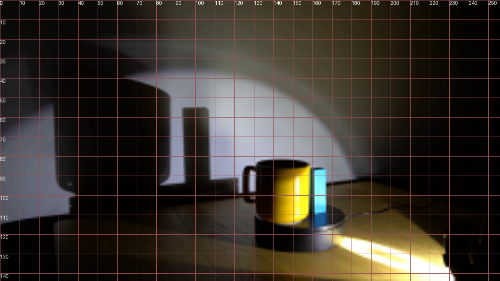
视觉工具实际返回图片 3
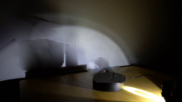
视觉工具实际返回图片 4
视觉工具实际返回图片 5

视觉工具实际返回图片 6
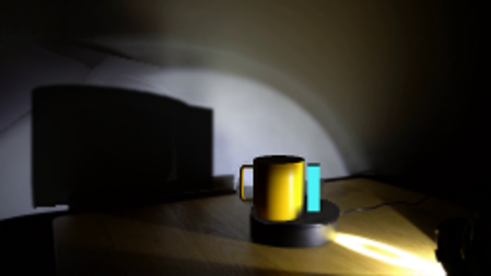
视觉工具实际返回图片 7
视觉工具实际返回图片 8
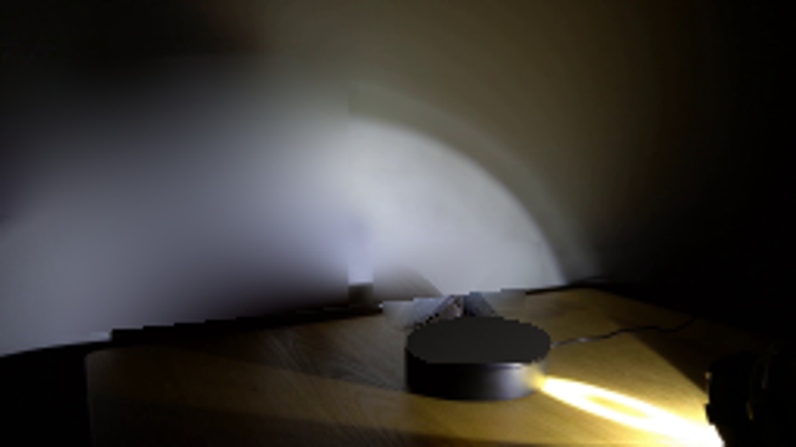
视觉工具实际返回图片 9

视觉工具实际返回图片 10
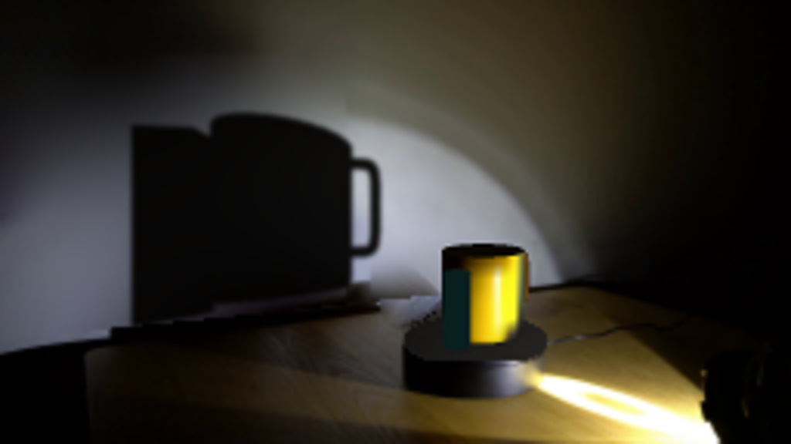
视觉工具实际返回图片 11
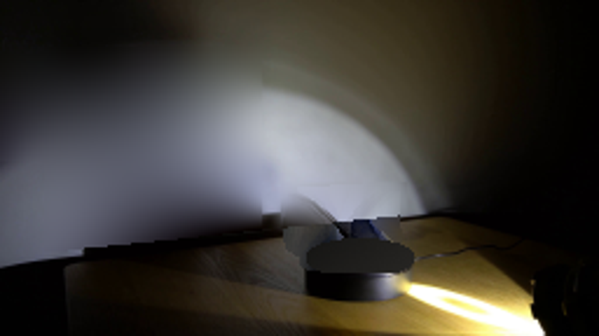
视觉工具实际返回图片 12
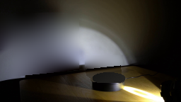
视觉工具实际返回图片 13
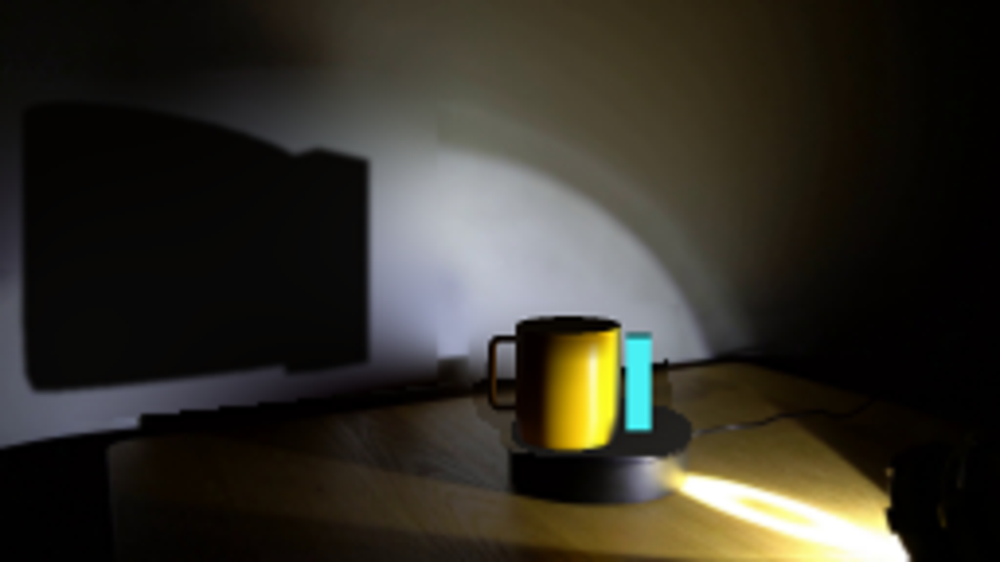
视觉工具实际返回图片 14

保存候选 7 份；完成命令 18 次；可验证图片返回 14 张。原始 API 响应与完整日志保留在本地。